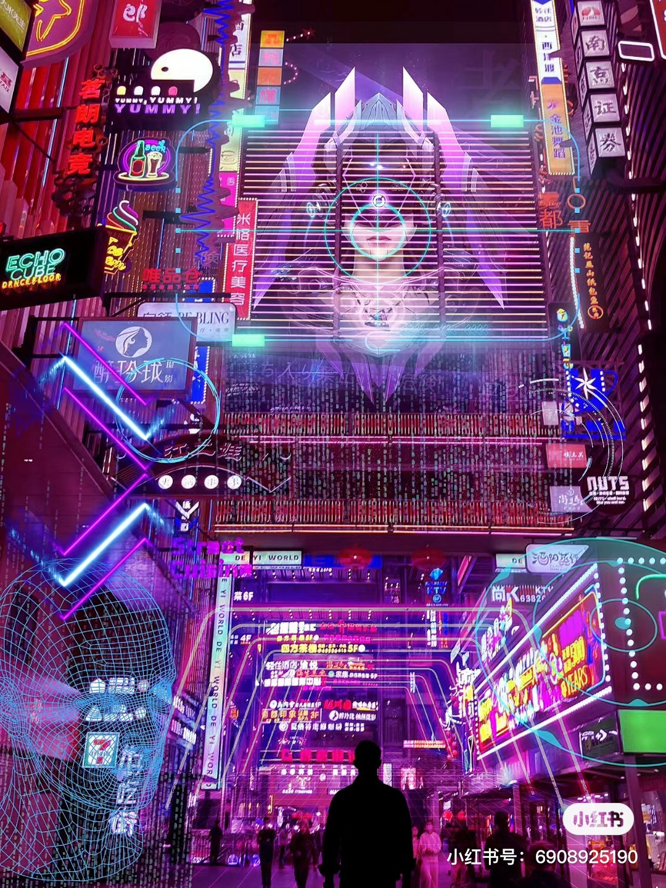
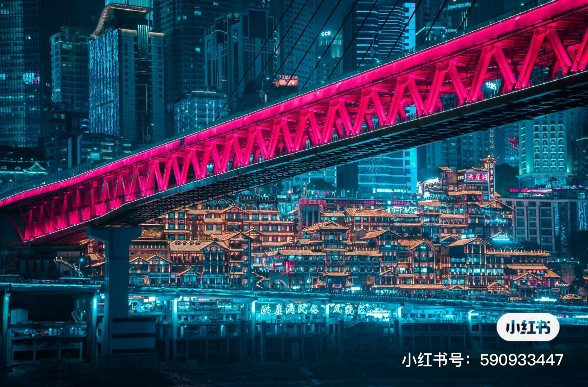
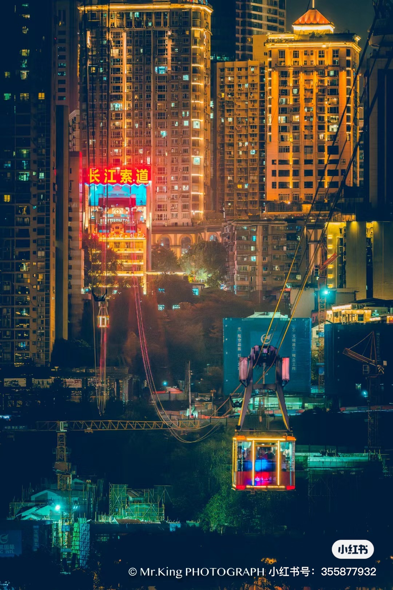

Deyi Street
Affamé ? Faites un tour au célèbre marché de street food de Deyi durant la soirée. Sous les lumières néons scintillantes et les affiches futuristes, se promener seul ou avec des amis et des proches constituera un souvenir extraordinaire. Découvrez la cuisine locale et l'ambiance pour presque rien et oubliez vos soucis en riant et en mangeant.
Hong Ya Dong
Amateur de films de science-fiction ou de fantaisie? Si c'est le cas, HongYa Dong est un site incontournable de la ville. Cette colonie de bâtiments traditionnels accrochés à une falaise n'existe nulle part ailleurs dans le monde, parfait pour passer une nuit avec amis ou proches.
Téléphérique du fleuve Yangtsé
Souhaitez-vous passer une soirée romantique avec votre bien-aimé(e)? Le Téléphérique du fleuve Yangtsé est incontournable. Ce téléphérique est unique de son genre, survolant le fleuve vers la lumière éblouissante de la ville. Lumière néon d'un côté, montagnes apaisantes de l'autre, lorsque vous contemplez les vagues agitées du fleuve, la nuit deviendra l'un de vos souvenirs les plus précieux.